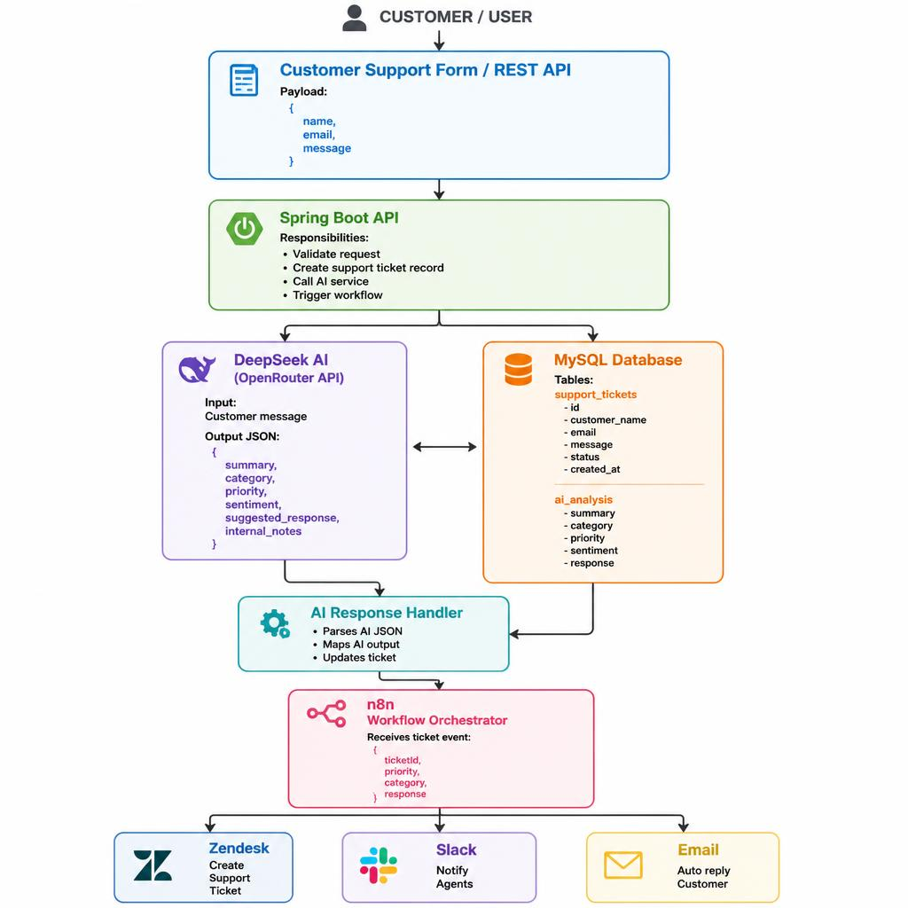
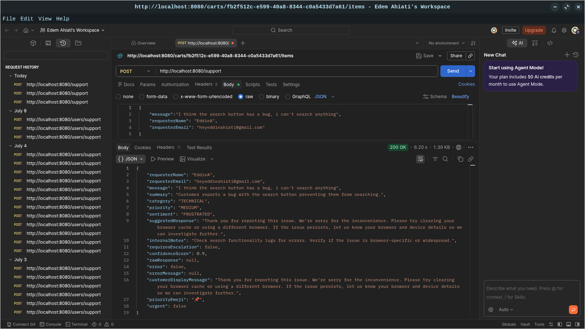
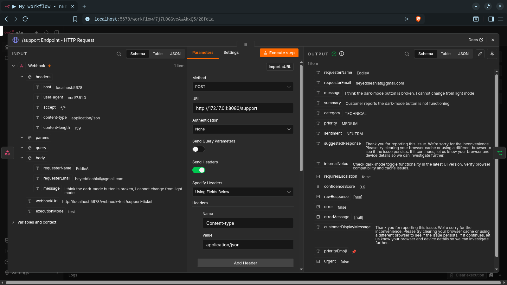
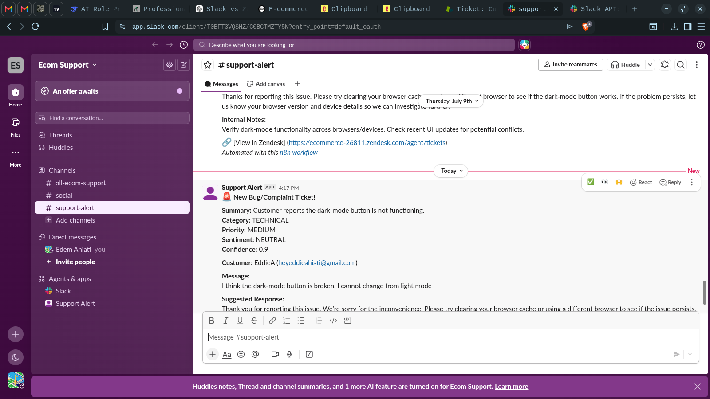
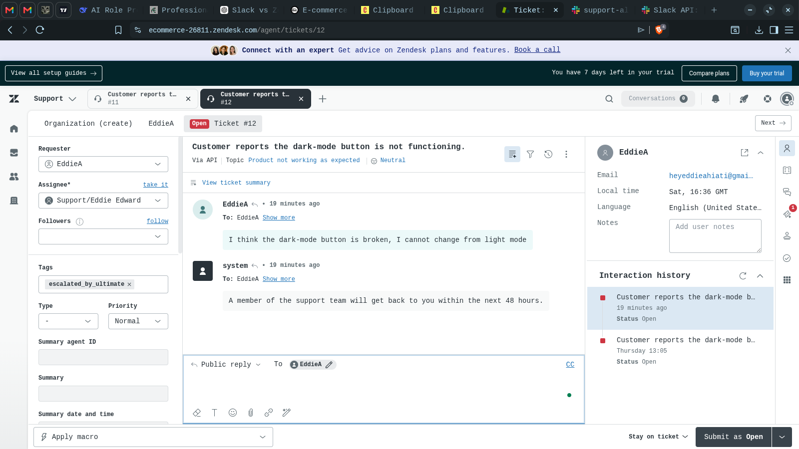

AI Support Automation Platform
An end-to-end AI-powered system that automates customer support workflows — from ticket triage to multi-channel response orchestration.
Key Impact: Reduced manual ticket triage from 5-10 minutes to under 5 seconds ·
90%+ AI categorization accuracy · Automated Slack alerts, Zendesk tickets, and email responses.
The Problem
Support teams spend too much time on repetitive tasks. Every incoming ticket requires someone to:
- Read the message
- Figure out what category it belongs to (billing? technical? login?)
- Decide how urgent it is
- Write a response
- Create a ticket in Zendesk
- Notify the right team
This takes 5-10 minutes per ticket, is inconsistent (different agents categorize differently), and creates bottlenecks.
The Solution
I designed and built an AI-powered platform that automates the first 80% of this workflow — allowing human agents to focus on complex, nuanced issues.
Architecture Overview

Workflow in Action
1.n8n Automation Workflow

Figure 1: The n8n workflow orchestrates the entire automation pipeline — from webhook trigger to Slack alerts and Zendesk ticket creation.
2.AI Analysis (Structured JSON)


Figure 2: DeepSeek AI returns structured JSON with summary, category, priority, sentiment, and suggested response.
3.Slack Alert (High Priority)

Figure 4: High-priority tickets trigger real-time Slack alerts to notify the team immediately.
4.Zendesk Ticket with AI Analysis

Figure 3: The Zendesk ticket is automatically created with the AI analysis attached for the support agent.
Technologies Used
Java 21
Spring Boot 3
Spring Security
JWT
DeepSeek AI
OpenRouter
n8n
Zendesk API
Slack API
MySQL
JPA/Hibernate
Flyway
Docker
GitHub Actions
Railway
REST APIs
Measurable Impact
| Metric | Before | After |
|---|---|---|
| Ticket triage time | 5-10 minutes (manual) | < 5 seconds (automated) |
| Categorization accuracy | Inconsistent | 90%+ (AI-driven) |
| First response time | Hours | Minutes (auto-reply + agent alert) |
| Human error | Common | Reduced (consistent AI analysis) |
Key Technical Decisions
- Separate AI logic from orchestration: Spring Boot handles analysis; n8n handles downstream actions. Easy to swap or update either.
- OpenRouter as AI gateway: Access to DeepSeek without managing multiple API keys and handles rate limits.
- Docker for everything: Consistent local, test, and production environments.
- Structured JSON from AI: Prompt engineering to force valid JSON output for easy parsing.
- n8n for automation: Non-developers can modify workflows; separates logic from application code.
Challenges & Learnings
- AI isn't perfect: I added fallback parsing and error handling when the AI returned invalid JSON or plain text.
- Container networking: I had to use
host.docker.internalto connect n8n (in Docker) to my Spring Boot API. - Authentication: I added JWT tokens and environment variables for secure service-to-service communication.
- Rate limiting: I added exponential backoff and switched to OpenRouter to handle API rate limits.
- Documentation matters: I tracked all technical decisions and architecture choices in my GitHub repo and portfolio.
Live Demo
📂 GitHub Repository: https://github.com/eddiea21/ai-support-automation
(Note: The n8n workflow is currently running locally. Contact me for a live demonstration.)